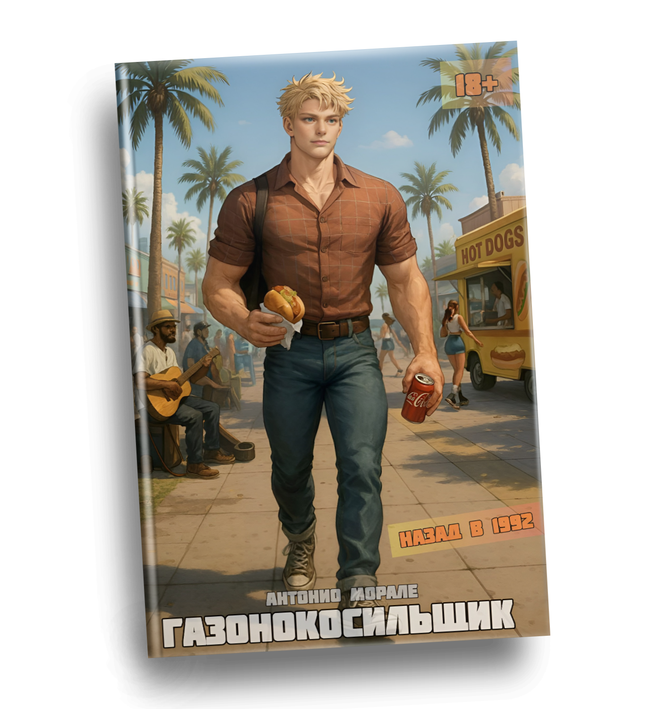
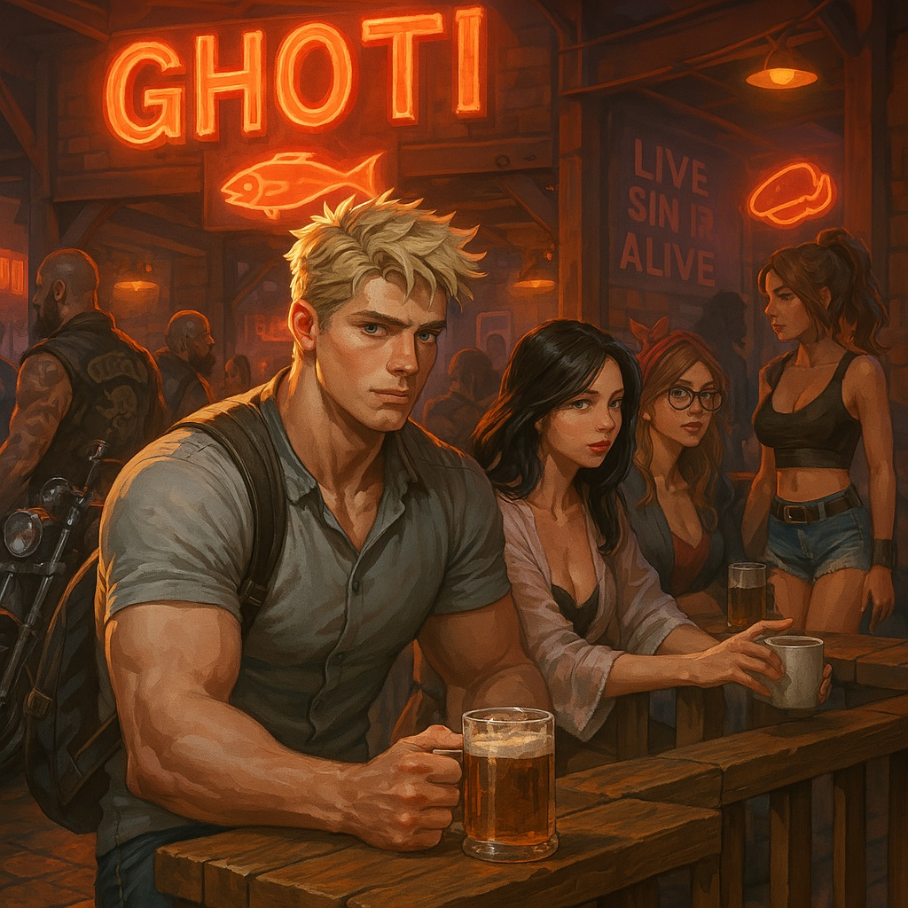
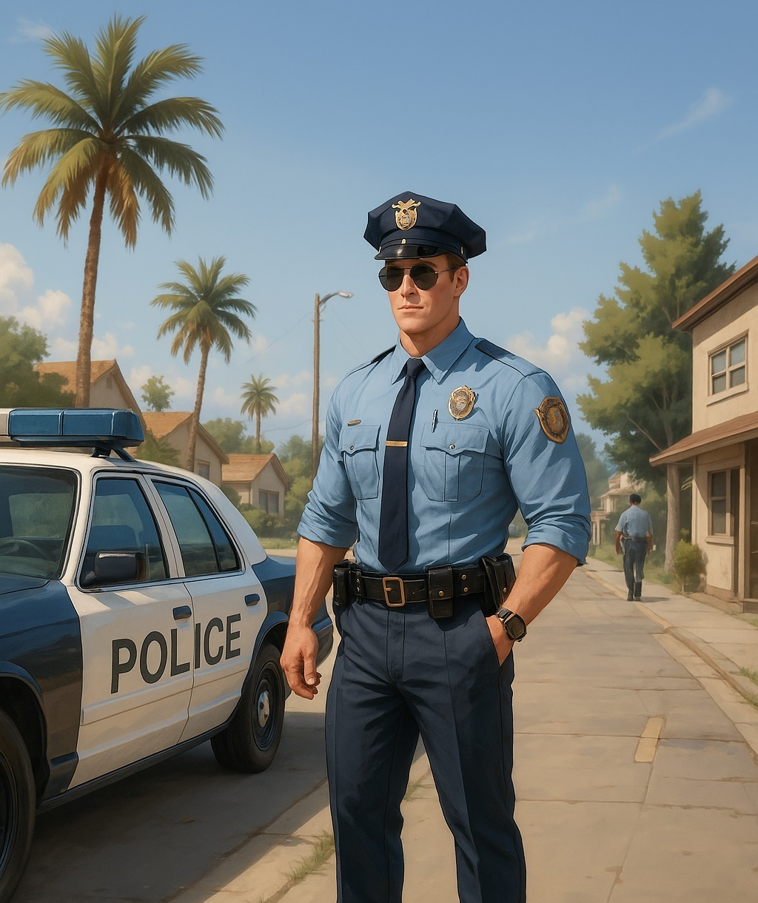
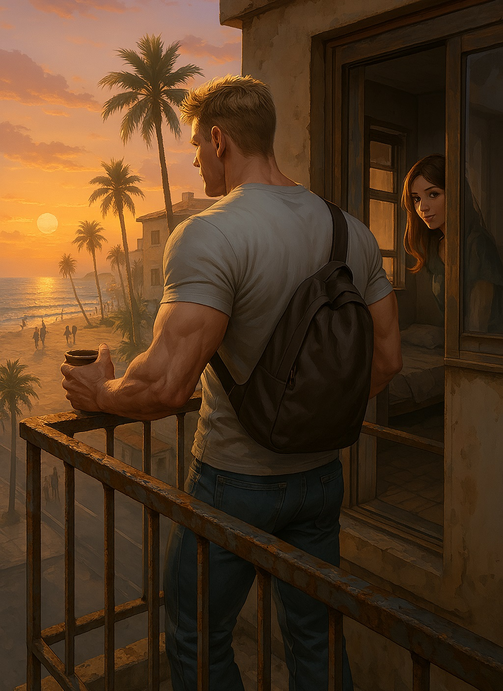
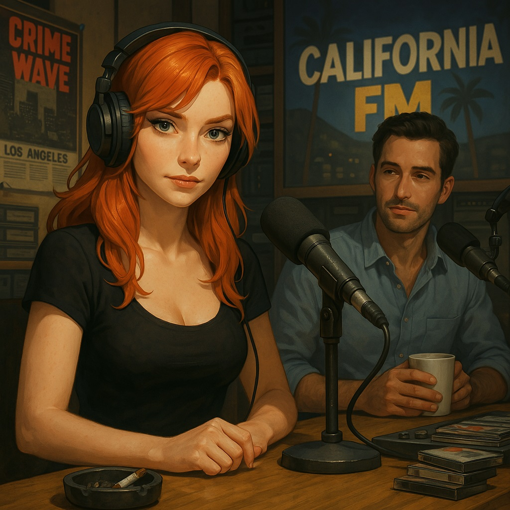
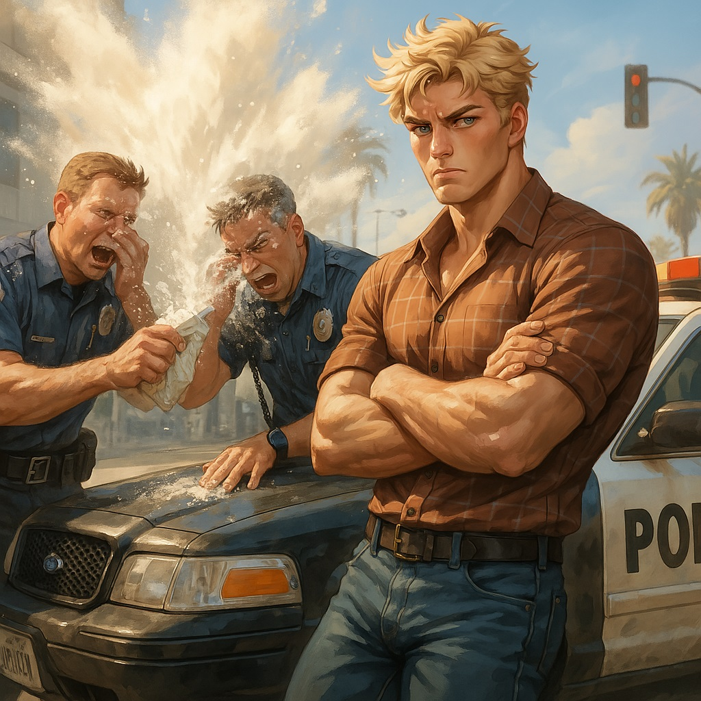
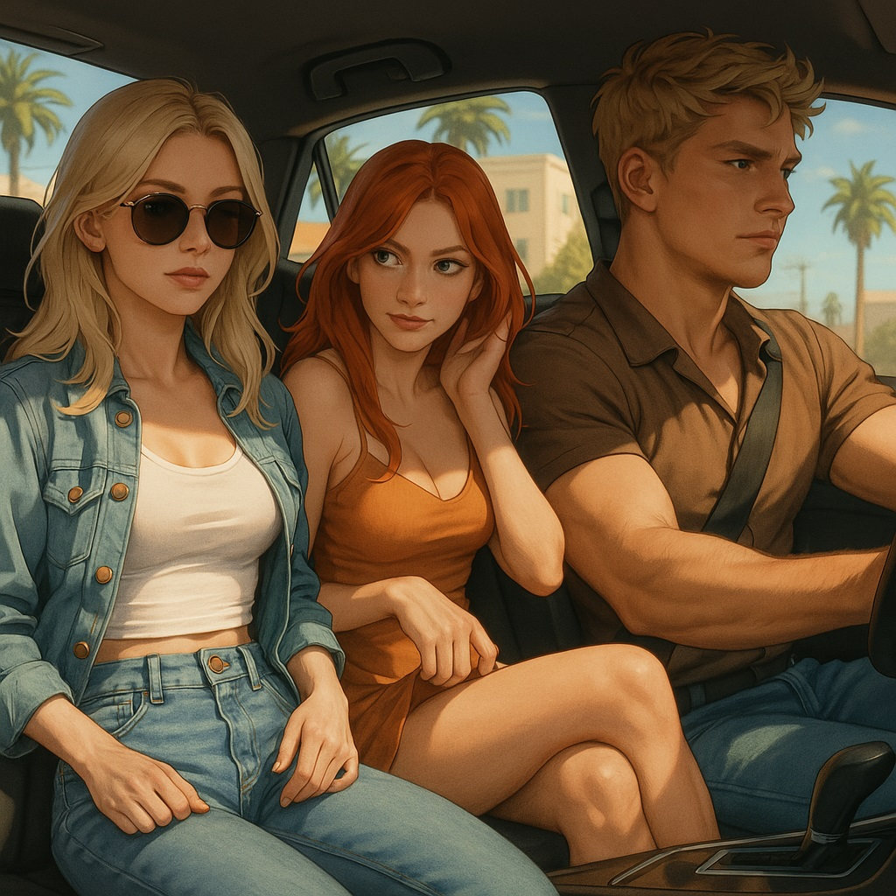
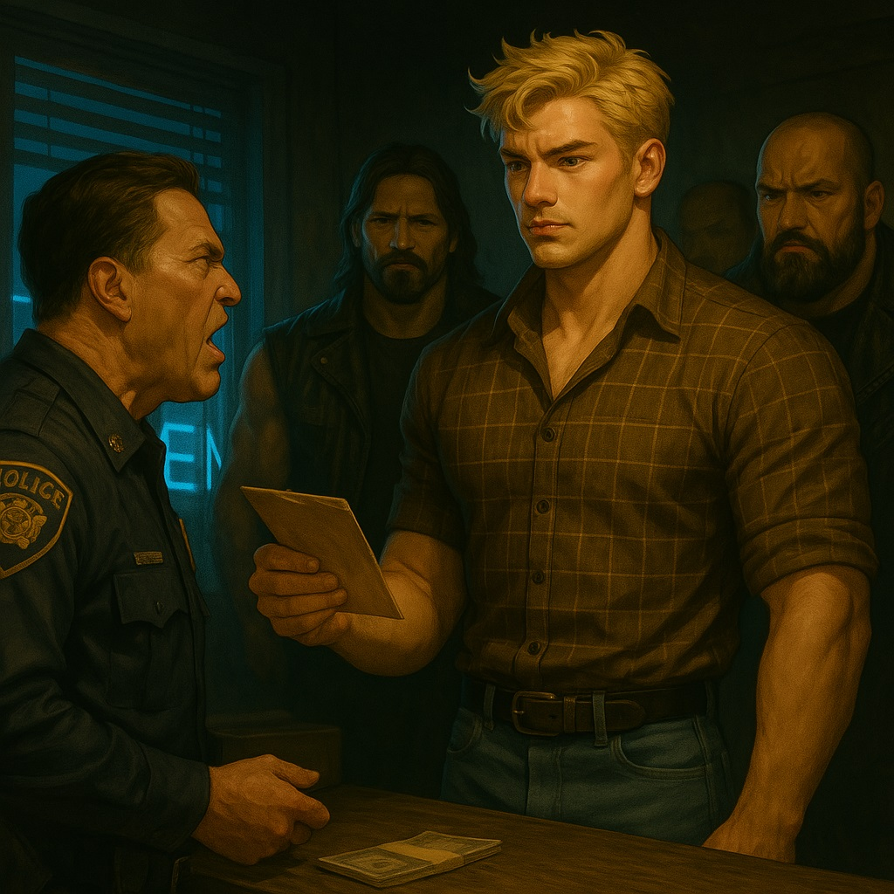

Он проснулся в прошлом — в Калифорнии девяностых. Солнце, рок-н-ролл, VHS-магнитофоны и второй шанс.
Вопрос только один — как прожить эту жизнь заново?
Вопрос только один — как прожить эту жизнь заново?
Мишель Хадсон

Ghoti это рыба? Что за Fuck?!

Ваши документы, мисс Вальдес...
Чёрт! Новая работа?!

Да уж... Лос-Анджелес 90-х...
У меня есть идея!

Лучшая радиоведущая ЛА

Дерьмо! Джимми за это ответит!

California Dreamin’

Назад в 1992
Здесь нет Wi-Fi, но есть свобода
Калифорния зовёт
🎙️ – Доброе утро, дорогие слушатели! С вами Radio California FM!
🎙️ – Сегодня на календаре у нас 29 февраля 1992 года – редкий день, друзья, так что наслаждайтесь им по полной!
🎙️ – А за окном… ммм, серость и туман. Ну, чего ещё ждать от самого дождливого месяца в году? Но не переживайте, он наконец-то заканчивается! Анжелика, ты рада?
🎙️ – Ох, Джеф, ты даже не представляешь, КАК рада! Я уже и купальник приготовила, и крем для загара…
🎙️ – Купальник? Хм…
🎙️ – Угу! Такой маленький, скромный мини-бикини…
🎙️ – Ого! Теперь захотелось увидеть, как ты его примеряешь!
🎙️ – Ага, мечтай, Джеф!
🎙️ – Кстати, погодка налаживается: сегодня синоптики обещают нам солнце во второй половине дня и целых 68 градусов по Фаренгейту! Так что, Анжелика, может, я ещё и увижу тебя в бикини наяву.
🎙️ – Ну уж нет, Джеф, тебе остаётся только воображать!
🎙️ – Жаль… Очень жаль… Ну а теперь – немного рекламы от нашего спонсора.
🎶 "Устали от пробок? Вас раздражают медленные водители? Тогда вам нужен новый Chevrolet Camaro 1992 года! Мощность, скорость и стиль – всё, что нужно настоящему калифорнийцу! Загляните в дилерский центр "Sunset Motors" на Вентура-Бульвар и заберите свою мечту уже сегодня!"